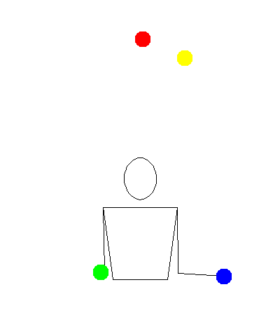
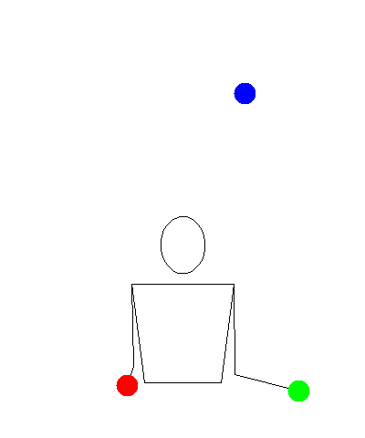

4-Ball Shower

Description
Prerequisites
Tutorial

Tips
- This one will take a while to get. One trouble will be collisions. If that happens, you may need to increase the throw height. This will require more consistency.
- Starting is tough. You can either start with 3 in one hand or 2 in each hand. Different people prefer different things. It is possible to start with all 4 in one hand but that is more difficult.